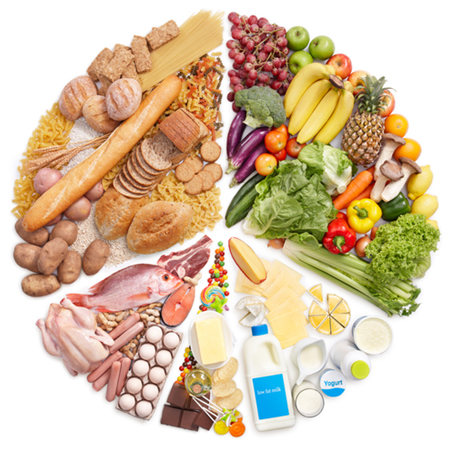

Bem-vindo ao Portal da Saúde
.jpeg)
Por que cuidar da saúde?
Ter hábitos saudáveis aumenta tua energia, previne doenças e melhora tua qualidade de vida. Usa os botões acima pra navegar pelos temas.
Os 5 Pilares da Saúde
- Alimentação: Base de tudo
- Exercício: Corpo em movimento
- Saúde Mental: Mente equilibrada
- Sono: Recuperação essencial
- Prevenção: Check-ups regulares
Alimentação Saudável

Regra do Prato
Divide teu prato assim: 50% legumes e verduras, 25% proteínas, 25% carboidratos.
Alimentos que não podem faltar
- Frutas: 3 porções por dia
- Água: mínimo 2 litros por dia
- Fibras: aveia, chia, linhaça
- Gorduras boas: abacate, azeite, castanhas
Exercício Físico
Meta da OMS: 150 min por semana
30 minutos por dia, 5x na semana. Pode ser caminhada, dança, subir escada.
Treino rápido de 10 minutos
- 1 min polichinelo
- 1 min agachamento
- 1 min prancha
- 1 min flexão - Repete 2x
Saúde Mental
.jpeg)
Técnica 5-4-3-2-1 pra ansiedade
Olha ao redor e identifica: 5 coisas que vê, 4 que pode tocar, 3 que ouve, 2 que cheira, 1 que sente o gosto.
Hábitos diários
- 10 min de meditação/respiração
- Escreve 3 coisas boas do dia
- Desconecta do celular 1h antes de dormir
Qualidade do Sono
.jpeg)
Regra dos 90 minutos
Dormimos em ciclos de 90 min. Acordar no fim do ciclo te deixa menos grogue. 7.5h = 5 ciclos.
Higiene do Sono
- Quarto escuro e fresco 18-22°C
- Sem telas 1h antes de deitar
- Mesmo horário pra dormir e acordar
- Evita café depois das 16h
Prevenção e Check-up
.jpeg)
.jpeg)
Exames anuais básicos
Mesmo sem sintomas, faz 1x por ano: hemograma, glicose, colesterol, pressão.
Sinais de alerta
- Cansaço extremo por +2 semanas
- Perda de peso sem motivo
- Dor de cabeça forte e constante
- Mudanças na pele ou pintas